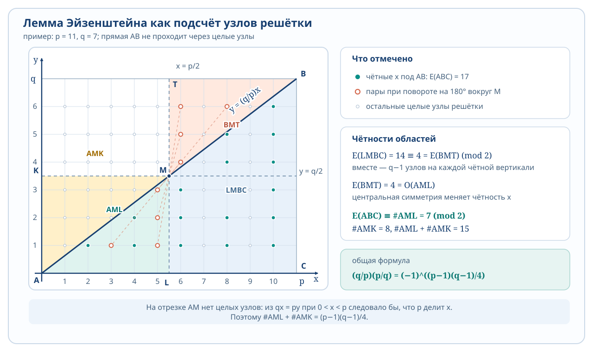
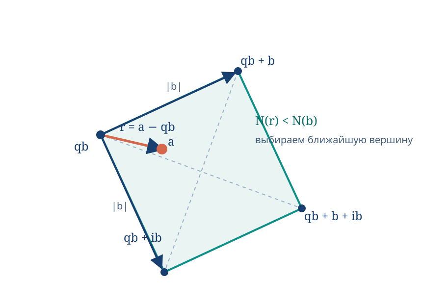

Число \(I\) называется интегралом (Римана) функции \(f\) по \([a, b]\), если
\[\forall \varepsilon > 0 \; \exists \delta > 0 \colon \forall T \colon \Delta(T) < \delta \Rightarrow \forall C \; |\sigma(f, T, C) - I| < \varepsilon.\]
В таком случае \(f\) называется интегрируемой на \([a, b]\). Обозначение: \(I = \int_a^b f(x)\,dx\)
Пример: \(f(x) \equiv C \Rightarrow f\) интегрируема на \([a, b]\) и \(\int_a^b C\,dx = C(b - a)\)
Утверждение: \(f\) интегрируема на \([a, b] \Rightarrow f\) ограничена на \([a, b]\)
Предположим \(f\) неограничена, \(T = \{x_k\}\).
Тогда \(f\) не ограничена на некотором \([x_{k_0-1}, x_{k_0}]\).
Выберем \(C_k\) при \(k \neq k_0\) произвольно.
\(c_{k_0}\) можно выбрать так, что \(f(c_{k_0})\) — достаточно большое по модулю \(\Rightarrow \sigma(f, T, C)\) будет сколь угодно большой по модулю.
Следствие: \(f\) кусочно непрерывна на \([a, b] \Rightarrow f\) интегрируема на \([a, b]\).
1.3 Свойства интеграла
1. Аддитивность по отрезку.
Теорема: \(f\) интегрируема на \([a, b]\), \(c \in (a, b)\). Тогда \(\int_a^b f = \int_a^c f + \int_c^b f\).
По теореме из §2 \(f\) интегрируема на \([a, c]\) и на \([c, b]\).
Разобьём отрезки \([a, c]\) и \([c, b]\) на \(n\) равных частей.
\(\sigma_n'\) — интегральная сумма для \([a, c]\), \(\sigma_n''\) — для \([c, b]\).
\(\sigma_n = \sigma_n' + \sigma_n''\) — интегральная сумма для \([a, b]\).
При \(n \to \infty\): \(\int_a^b f = \int_a^c f + \int_c^b f\).
∎
Если для \(a > b\) положить по определению \(\int_a^b f = - \int_b^a f\), \(\int_a^a f = 0\), то свойство 1 будет верно для любого расположения \(a, b, c\) (\(f\) интегрируема на наибольшем отрезке).
Лемма: \(f, g\) интегрируемы на \([a, b]\). Тогда
1) \(|f|\) интегрируема на \([a, b]\)
2) \(\alpha f + \beta g\) интегрируемы на \([a, b]\).
Определение:
\(f: \langle a, b \rangle \to \mathbb{R}\), у \(f\) есть первообразная. Неопределённым интегралом \(f\) называется множество всех первообразных \(f\) на \(\langle a, b \rangle\).
Обозначение: \(\int f(x)\,dx\).
\(\int f(x)\,dx = \{F(x) + C \mid C \in \mathbb{R}\}\), \(F\) — некоторая первообразная.
Обычно пишут \(\int f(x)\,dx = F(x) + C\).
\(\int \cos x\,dx = \sin x + C \; ; \; \int \sin x\,dx = -\cos x + C\)
\(\int \frac{dx}{\cos^2 x} = \operatorname{tg} x + C \; ; \; \int \frac{dx}{\sin^2 x} = -\operatorname{ctg} x + C\)
\(\int \frac{dx}{\sqrt{1-x^2}} = \arcsin x + C\)
\(\int \frac{dx}{1+x^2} = \operatorname{arctg} x + C\)
Утверждение (Линейность неопределённого интеграла):
\(f, g\) имеют первообразные на \(\langle a, b \rangle\), \(\alpha, \beta \in \mathbb{R}\), \(\alpha^2 + \beta^2 > 0 \Rightarrow \alpha f + \beta g\) имеет первообразную и \(\int (\alpha f + \beta g) = \alpha \int f + \beta \int g\).
Пусть \(H \in \text{правой части} \Rightarrow H = \alpha F + \beta G\), где \(F' = f, G' = g \Rightarrow H' = \alpha f + \beta g \Rightarrow H \in \text{левой части}\).
Пусть \(H \in \text{левой части}\), \(F\) — первообразная \(f\), б.о.о. \(\beta \neq 0\).
\(G = \frac{H - \alpha F}{\beta}\), \(G' = \frac{H' - \alpha F'}{\beta} = \frac{\alpha f + \beta g - \alpha f}{\beta} = g\). Таким образом, \(H = \alpha F + \beta G\).
∎
Сумма Минковского: \(A + B = \{a + b \mid a \in A, b \in B\}\).
Теорема (Интегрирование по частям):
\(f, g\) — дифференцируемы, функция \(fg'\) имеет первообразную, тогда \(f'g\) — тоже и \(\int f'g = fg - \int fg'\).
Утверждение: \(f\) периодическая с периодом \(T\). Тогда \(\forall a \; \int_a^{a+T} f = \int_0^T f\).
\(\int_a^{a+T} f(x)\,dx \overset{x \to x+kT}{=} \int_{a_0}^{a_0+T} f(x)\,dx = \int_{a_0}^0 f(x)\,dx + \int_0^{a_0+T} f = \int_{a_0+T}^T f + \int_0^{a_0+T} f\)
∎
1.7 Квадрируемость. Интеграл как площадь
Определение:
\(P\) — множество всех многоугольных фигур. \(A\) — множество точек плоскости.
\(S_*(A) = \sup_{\substack{P \in \mathcal{P} \\ P \subset A}} S(P)\) — внутренняя площадь.
\(S^*(A) = \inf_{\substack{P \in \mathcal{P} \\ P \supset A}} S(P)\) — внешняя площадь.
Если \(S^*(A) = S_*(A)\), то множество \(A\) называется квадрируемым, а их общее значение — площадью \(A\).
Теорема: Пусть \(f\) интегрируема на \([a, b]\) и неотрицательна на \([a, b]\). Тогда подграфик \(f\) квадрируем, и \(S_{\text{подгр}} = \int_a^b f(x)\,dx\).
\(\varepsilon > 0\). Выберем такое разбиение \([a, b]\), что \(S(f, T) - s(f, T) < \varepsilon\).
∎
Теория чисел
§ 1. Лемма об уточнении показателя
Напоминание Пусть \(r\in\mathbb Q\) и \(r=p^k\dfrac ab\), где \(k\in\mathbb Z\), а \(p\nmid a\), \(p\nmid b\). Тогда \(\lvert r\rvert_p=p^{-k}\).
Теорема (LTE-лемма) Пусть \(a,b\in\mathbb Z\), \(p\in\mathbb P\), \(p\nmid a\), \(p\nmid b\) и \(p\mid(a-b)\). При \(p\ne2\), а также при \(p=2\) и дополнительном условии \(4\mid(a-b)\), выполняется равенство
Доказательство. 1. Случай \(p\nmid n\) Разложим разность степеней: \(a^n-b^n=(a-b)(a^{n-1}+a^{n-2}b+\dots+b^{n-1})\). Вторая скобка сравнима с \(na^{n-1}\not\equiv0\pmod p\). Поэтому \(\lvert a^n-b^n\rvert_p=\lvert a-b\rvert_p\).
У первого слагаемого показатель равен \(\lvert a-b\rvert_p+1\). При \(2\le k\le p-1\) имеем \(p\mid\binom pk\), поэтому соответствующие слагаемые делятся как минимум на \(p^3\); последнее слагаемое равно \((tp)^p\). Следовательно, \(\lvert a^p-b^p\rvert_p=\lvert a-b\rvert_p+1\).
3. Общий случай Пусть \(n=kp^\alpha\), где \(p\nmid k\). Применим случай \(n=p\) ровно \(\alpha\) раз, а затем случай \(p\nmid n\):
Следствие Если \(a^s\equiv1\pmod p\), то \(\operatorname{ord}_p a\mid s\).
Пример Пусть \(p\in\mathbb P\), \(x=\dfrac{p^p+1}{p+1}\), а \(q\in\mathbb P\) и \(q\mid x\). Предположим, что \(q\mid(p+1)\). По LTE \(\lvert p^p+1\rvert_q=\lvert p+1\rvert_q+\lvert p\rvert_q=\lvert p+1\rvert_q\), что противоречит \(q\mid x\). Значит, \(p^p\equiv-1\pmod q\), но \(p\not\equiv-1\pmod q\), поэтому \(\operatorname{ord}_q p=2p\). Отсюда \(2p\mid(q-1)\), в частности \(q\equiv1\pmod p\).
Теорема Дирихле Если \((a,b)=1\), то в арифметической прогрессии \(an+b\) бесконечно много простых чисел.
§ 2. Квадратичные вычеты
Квадратичный вычет — Пусть \(p\in\mathbb P\), \(a\in\mathbb F_p\), \(a\ne0\). Число \(a\) называется квадратичным вычетом по модулю \(p\), если существует \(x\in\mathbb F_p\), для которого \(x^2=a\).
Замечание Из \(x^2=a\) следует \((-x)^2=a\). Кроме того, \(x^2\equiv y^2\pmod p\Rightarrow p\mid(x-y)(x+y)\). Поэтому \(1^2,2^2,\ldots,\left(\frac{p-1}{2}\right)^2\) — в точности все квадратичные вычеты по модулю \(p\).
Доказательство Квадратичные вычеты — в точности все корни многочлена \(x^{(p-1)/2}-1\). Поэтому \(a\) — квадратичный вычет тогда и только тогда, когда \(a^{(p-1)/2}\equiv1\pmod p\). Из \(x^{p-1}-1=(x^{(p-1)/2}-1)(x^{(p-1)/2}+1)\) следует, что для невычетов значение равно \(-1\).
Если \(a=\prod q_i^{\alpha_i}\), то \(\left(\frac ap\right)=\prod_{2\nmid\alpha_i}\left(\frac{q_i}{p}\right)\).
Теорема (критерий Гаусса) Пусть \(p\nmid a\). Тогда \(\left(\frac ap\right)=(-1)^\ell\), где \(\ell\) — количество чисел среди \(a,2a,\ldots,\frac{p-1}{2}a\), у которых наименьший по абсолютной величине вычет отрицателен.
Доказательство Сравним с единицей числа \(\pm1,\pm2,\ldots,\pm\frac{p-1}{2}\). Если два наименьших по абсолютной величине вычета совпадают, то \(r_i=r_j\Rightarrow(\pm i)a\equiv(\pm j)a\pmod p\), откуда \(i=j\). Значит, \(\{r_1,\ldots,r_{(p-1)/2}\}=\{1,2,\ldots,(p-1)/2\}\). Перемножая сравнения, получаем
Доказательство Рассмотрим \(2,4,\ldots,p-1\). У \(\lfloor p/4\rfloor\) из них положительный наименьший вычет. Поэтому \(\ell=\frac{p-1}{2}-\lfloor p/4\rfloor\). Отсюда \(2\mid\ell\iff p\equiv1,7\pmod8\), а \(2\nmid\ell\iff p\equiv3,5\pmod8\).
Символ Якоби — Пусть \(m\in\mathbb N\), \(2\nmid m\), \(m=p_1\cdots p_k\), причём простые множители могут совпадать. Тогда \(\left(\frac am\right)\stackrel{\mathrm{def}}=\left(\frac a{p_1}\right)\cdots\left(\frac a{p_k}\right)\).
Замечания
\(\left(\frac2{15}\right)=\left(\frac23\right)\left(\frac25\right)=1\), но \(2\) — невычет по модулю \(15\).
Выполняются свойства символа Лежандра; формулы для \(\left(\frac{-1}{m}\right)\) и \(\left(\frac2m\right)\) рассматриваются отдельно.
Критерий Эйлера в общем случае неверен: \(\left(\frac7{15}\right)=\left(\frac75\right)\left(\frac73\right)=-1\).
\(\left(\frac{-1}{m}\right)=(-1)^{(m-1)/2}\), поскольку \(\frac{p_1-1}{2}+\cdots+\frac{p_k-1}{2}\equiv\frac{p_1\cdots p_k-1}{2}\pmod2\).
Доказательство По критерию Гаусса \(\left(\frac pq\right)=(-1)^{\ell_1}\), где \(\ell_1\) — число таких \(x=1,\ldots,\frac{q-1}{2}\), для которых наименьший по абсолютной величине вычет \(px\) отрицателен. Для каждого такого \(x\) существует не более одного \(y\), причём \(-q/2<px-qy<0\), \(y>0\) и \(y\le(p-1)/2\). Поэтому \(\ell_1\) считает пары \((x,y)\) из прямоугольника \(1\le x\le(q-1)/2\), \(1\le y\le(p-1)/2\), для которых \(-q/2<px-qy<0\). Аналогично, \(\left(\frac qp\right)=(-1)^{\ell_2}\), где \(0<px-qy<p/2\). Значит, произведение символов равно \((-1)^\ell\), где \(\ell\) — число пар с \(-q/2<px-qy<p/2\).
Это отображение разбивает пары на пары, кроме возможной неподвижной точки. Она существует тогда и только тогда, когда \(q=4x-1\) и \(p=4y-1\), то есть \(p\equiv q\equiv3\pmod4\). Поэтому \(\ell\) нечётно ровно в этом случае.
Доказательство Равенство \(\lfloor2ai/p\rfloor=k\) равносильно \(pk/2<ai<pk/2+p/2\). Число \(ai\) имеет отрицательный наименьший вычет тогда и только тогда, когда \(k\) нечётно. Формула следует из критерия Гаусса.

Целые точки в прямоугольнике \(1\le x\le(q-1)/2\), \(1\le y\le(p-1)/2\); прямая разделяет области, подсчитываемые в доказательстве.
Доказательство леммы Эйзенштейна (геометрическое) Сумма \(\sum_{i=1}^{(p-1)/2}\lfloor2ai/p\rfloor\) считает целые точки на вертикалях \(x=2i\) под графиком \(y=(a/p)x\). Поэтому знак символа Лежандра определяется чётностью числа целых точек в соответствующем треугольнике. При наложении двух таких подсчётов для \(p\) и \(q\) остаётся прямоугольник из \((p-1)(q-1)/4\) точек, что вновь даёт показатель в квадратичном законе взаимности.
Доказательство Руссо Рассмотрим \(\mathbb Z_{pq}^{}=\{k=1,\ldots,pq-1\mid(k,pq)=1\}\) и его образ в \(\mathbb Z_p^{}\times\mathbb Z_q^{*}\). Положим \(A=\{(a,b)\mid1\le a\le(p-1)/2,1\le b\le q-1\}\), \(B=\{(a,b)\mid1\le a\le p-1,1\le b\le(q-1)/2\}\), \(C=\{k\le(pq-1)/2\mid(k,pq)=1\}\). По китайской теореме об остатках произведение всех элементов равно \(((p-1)!)^{q-1},((q-1)!)^{p-1})=(1,1)\). Попарное объединение элемента с противоположным показывает, что произведения по \(A,B,C\) различаются только знаками. Их сравнение по модулю \(p\) и \(q\) даёт множители \(\left(\frac qp\right)\) и \(\left(\frac pq\right)\); при переходе от \(A\) к \(B\) меняется \((p-1)(q-1)/4\) знаков. Отсюда следует закон взаимности.
Квадратичный закон взаимности для символов Якоби Пусть \(m,n\in\mathbb N\), \(m,n>1\), \(2\nmid m\), \(2\nmid n\). Тогда \(\left(\frac mn\right)\left(\frac nm\right)=(-1)^{(m-1)(n-1)/4}\).
Доказательство Пусть \(m=p_1\cdots p_k\), \(n=q_1\cdots q_\ell\). Перемножая закон взаимности для всех пар \((p_i,q_j)\), получаем показатель \(\left(\sum_i(p_i-1)/2\right)\left(\sum_j(q_j-1)/2\right)\equiv(m-1)(n-1)/4\pmod2\).
Пример \(\left(\frac{77}{101}\right)=\left(\frac{101}{77}\right)(-1)^{50\cdot38}=\left(\frac{24}{77}\right)=\left(\frac2{77}\right)\left(\frac3{77}\right)=(-1)\left(\frac{77}{3}\right)=\left(\frac23\right)=-1\).
§ 4. Первообразные корни
Первообразный корень — Пусть \(m\in\mathbb N\). Число \(g\) называется первообразным корнем по модулю \(m\), если \(\operatorname{ord}_m g=\varphi(m)\). Тогда \(g,g^2,\ldots,g^{\varphi(m)}\) — приведённая система вычетов по модулю \(m\).
Теорема Для каждого простого \(p\) существует первообразный корень по модулю \(p\).
Доказательство. I Многочлен \(x^{p-1}-1\) в \(\mathbb F_p\) имеет ровно \(p-1\) корней. Если \(d\mid p-1\), то из \(x^{p-1}-1=(x^d-1)(\ldots)\) следует, что \(x^d-1\) имеет \(d\) корней. Пусть \(p-1=p_1^{\alpha_1}\cdots p_k^{\alpha_k}\). Для каждого \(i\) найдётся \(x_i\), такое что \(x_i^{p_i^{\alpha_i}}\equiv1\pmod p\), но \(x_i^{p_i^{\alpha_i-1}}\not\equiv1\pmod p\). Следовательно, \(\operatorname{ord}_p x_i=p_i^{\alpha_i}\).
Вспомогательное утверждение Если \(\operatorname{ord}_p x=a\), \(\operatorname{ord}_p y=b\), \((a,b)=1\), то \(\operatorname{ord}_p(xy)=ab\). Действительно, из \((xy)^n\equiv1\) следует \(x^{bn}\equiv1\), значит \(a\mid bn\) и \(a\mid n\); аналогично \(b\mid n\), поэтому \(ab\mid n\).
II Используем тождество \(\sum_{d\mid n}\varphi(d)=n\). Оно получается, если выписать дроби \(1/n,2/n,\ldots,n/n\) и после сокращения сгруппировать их по знаменателям. Если \(d\mid p-1\), то \(\operatorname{ord}_p(g^k)=d\iff(k,d)=1\), поэтому элементов порядка \(d\) не более \(\varphi(d)\). Сумма оценок равна \(p-1\), то есть числу ненулевых вычетов. Следовательно, все оценки достигаются; в частности, существует элемент порядка \(p-1\).
Теорема Первообразный корень по модулю \(m\) существует тогда и только тогда, когда \(m=2,4,p^n,2p^n\), где \(p\) — нечётное простое, \(n\in\mathbb N\).
Доказательство существования для \(p^n\) Пусть \(\xi\) — первообразный корень по модулю \(p\). База \(n=1\) доказана. Пусть \(\xi\) — первообразный корень по модулю \(p^n\), но не по модулю \(p^{n+1}\). Один из элементов \(\xi\) и \(\xi+p\) является первообразным по модулю \(p^{n+1}\), поскольку
Первое слагаемое сравнимо с \(1\) по модулю \(p^n\), но не по модулю \(p^{n+1}\), а второе содержит ровно \(p^n\). Если \(x\) — выбранный элемент, то по LTE \(\lvert x^{p^{n-1}(p-1)}-1\rvert_p=\lvert x^{p-1}-1\rvert_p+\lvert p^{n-1}\rvert_p=1+n-1=n\). Поэтому \(\operatorname{ord}_{p^n}x=\varphi(p^n)\).
Необходимость Пусть \(m=p_1^{\alpha_1}\cdots p_k^{\alpha_k}\) и \(x\) — первообразный корень по модулю \(m\). Тогда \(x^{\varphi(p_i^{\alpha_i})}\equiv1\pmod{p_i^{\alpha_i}}\). Числа \(\varphi(p_i^{\alpha_i})\) должны быть попарно взаимно просты; отсюда нечётный простой делитель у \(m\) не более одного и \(v_2(m)\le1\), кроме отдельного случая \(m=4\). Получаются ровно указанные модули.
§ 5. Сравнения с неизвестными
Замечание Сравнение \(a_nx^n+\dots+a_0\equiv0\pmod p\), где \(p\nmid a_n\), эквивалентно сравнению \(f(x)\equiv0\pmod p\) с примитивным многочленом \(f\).
Теорема Любое сравнение \(f(x)\equiv0\pmod p\) можно заменить эквивалентным \(g(x)\equiv0\pmod p\), где \(\deg g<p\).
Доказательство Разделим \(f\) с остатком на \(x^p-x\): \(f(x)=g_1(x)(x^p-x)+g(x)\). Первый множитель равен нулю во всех точках \(\mathbb F_p\), поэтому сравнения эквивалентны.
Теорема Любое сравнение \(f(x_1,\ldots,x_n)\equiv0\pmod p\) можно заменить эквивалентным \(g(x_1,\ldots,x_n)\equiv0\pmod p\), где степень \(g\) по каждой переменной меньше \(p\).
Доказательство Пусть имеется одночлен \(Ax_1^{i_1}\cdots x_n^{i_n}\) с \(i_k\ge p\). Вычтем \(Ax_1^{i_1}\cdots x_k^{i_k-p}\cdots x_n^{i_n}(x_k^p-x_k)\). Степень по \(x_k\) уменьшится, а значения во всех точках не изменятся. Повторяем для каждой переменной.
Теорема Если степень \(f\in\mathbb Z[x_1,\ldots,x_n]\) по каждой переменной меньше \(p\) и \(f(x_1,\ldots,x_n)\equiv0\pmod p\) для всех \((x_1,\ldots,x_n)\), то все коэффициенты \(f\) делятся на \(p\).
Теорема Шевалле Пусть \(f\in\mathbb Z[x_1,\ldots,x_n]\), \(\deg f<n\), \(f(0,\ldots,0)=0\). Тогда для каждого \(p\in\mathbb P\) сравнение \(f(x_1,\ldots,x_n)\equiv0\pmod p\) имеет нетривиальное решение.
Доказательство Предположим, что нулевой набор — единственное решение. Тогда как функции на \(\mathbb F_p^n\) имеем
Степень левой части не превосходит \((p-1)\deg f<n(p-1)\), а справа одночлен \((-1)^{n+1}x_1^{p-1}\cdots x_n^{p-1}\) ни с чем не сокращается. По предыдущей теореме разность не может быть тождественно нулевой как функция — противоречие.
Замечание Если \(m=p_1^{\alpha_1}\cdots p_k^{\alpha_k}\), то \(f(x)\equiv0\pmod m\) равносильно системе сравнений по модулям \(p_i^{\alpha_i}\). Если по модулю \(p_i^{\alpha_i}\) имеется \(\ell_i\) решений, то по модулю \(m\) имеется \(\ell_1\cdots\ell_k\) решений.
Теорема (подъём простого корня) В каждом классе \(\bar a\pmod p\), для которого \(f(a)\equiv0\pmod p\) и \(f'(a)\not\equiv0\pmod p\), решения \(f(x)\equiv0\pmod{p^k}\) образуют один класс по модулю \(p^k\).
Доказательство Индукция по \(k\). Для перехода рассмотрим числа \(b+tp^k\), \(t=0,\ldots,p-1\), образующие класс \(b\pmod{p^k}\). По формуле Тейлора \(f(b+tp^k)\equiv f(b)+f'(b)tp^k\pmod{p^{k+1}}\). Так как \(p\nmid f'(b)\), значение \(t\) находится единственным образом по модулю \(p\).
Теорема (случай кратного корня) Пусть \(x\equiv a\pmod{p^k}\) — решение и \(f'(a)\equiv0\pmod p\). Тогда: 1) если \(f(a)\not\equiv0\pmod{p^{k+1}}\), среди чисел \(x\equiv a\pmod{p^k}\) нет решений по модулю \(p^{k+1}\); 2) если \(f(a)\equiv0\pmod{p^{k+1}}\), все такие числа удовлетворяют сравнению по модулю \(p^{k+1}\).
Гауссовы целые числа — Множество гауссовых целых чисел — это \(\mathbb Z[i]\stackrel{\mathrm{def}}=\{a+bi\mid a,b\in\mathbb Z\}\).
Замечание Арифметические операции в \(\mathbb Z[i]\) наследуются из \(\mathbb C\), поэтому выполняются коммутативность и ассоциативность сложения и умножения, существование нуля, противоположного элемента и единицы, а также дистрибутивность. Следовательно, \(\mathbb Z[i]\) — коммутативное кольцо с единицей.
Норма — Для \(z=a+bi\) положим \(N(z)\stackrel{\mathrm{def}}=a^2+b^2=|z|^2\).
Свойства нормы \(N(z_1z_2)=N(z_1)N(z_2)\). Элемент \(z\) обратим тогда и только тогда, когда \(N(z)=1\). Поэтому множество единиц равно \(U=\{-1,1,-i,i\}\).
Делимость — Для \(z_1,z_2\in\mathbb Z[i]\) пишут \(z_1\mid z_2\), если существует \(z_3\in\mathbb Z[i]\), такое что \(z_2=z_1z_3\).
Свойства делимости
\(z\mid0\) и \(u\mid z\) для любого \(u\in U\).
Если \(z_1\ne0\) и \(z_1\mid z_2\), то частное единственно.
Простой элемент — Элемент \(p\in\mathbb Z[i]\setminus U\) называется простым, если из \(p=ab\) следует, что \(a\in U\) или \(b\in U\). Если \(N(z)\in\mathbb P\), то \(z\) прост в \(\mathbb Z[i]\).
Теорема о делении с остатком Пусть \(a,b\in\mathbb Z[i]\), \(b\ne0\). Тогда существуют \(q,r\in\mathbb Z[i]\), для которых \(a=qb+r\) и \(N(r)<N(b)\).

Каждая точка плоскости попадает в квадрат со стороной \(|b|\); вершина \(qb\) выбирается так, чтобы \(N(a-qb)<N(b)\).Кратные \(b\) образуют квадратную решётку, порождённую векторами \(b\) и \(ib\).
Доказательство Все числа вида \(c=(k+\ell i)b\), \(k,\ell\in\mathbb Z\), лежат в узлах квадратной решётки со стороной \(|b|\). Любая точка плоскости находится в одной из её ячеек. Выберем ближайшую вершину \(qb\); для остатка \(r=a-qb\) расстояние до этой вершины меньше \(|b|\), поэтому \(N(r)<N(b)\).
Замечание Остаток не обязан быть единственным. Например, \(7+2i=(2+i)(3-i)+1=(1+i)(3-i)+3\).
Наибольший общий делитель — Наибольшим общим делителем \(a,b\in\mathbb Z[i]\) называется любой максимальный по модулю их общий делитель. Он определён с точностью до умножения на единицу.
\(a=q_1b+r_1,\ b=q_2r_1+r_2,\ r_1=q_3r_2+r_3,\ldots\). Нормы строго убывают: \(N(b)>N(r_1)>N(r_2)>\cdots\), поэтому процесс заканчивается. Последний ненулевой остаток делит \(a\) и \(b\) и делится на любой их общий делитель; это \(\gcd(a,b)\).
Следствие Если \(d=\gcd(a,b)\), то существуют \(x,y\in\mathbb Z[i]\), для которых \(d=ax+by\). В частности, \(a\) и \(b\) взаимно просты тогда и только тогда, когда \(ax+by=1\) для некоторых \(x,y\in\mathbb Z[i]\).
Основная теорема арифметики для \(\mathbb Z[i]\) Любое целое гауссово число, необратимое и отличное от нуля, раскладывается в произведение простых; разложение единственно с точностью до порядка множителей и умножения их на обратимые элементы.
Доказательство Существование доказывается индукцией по \(N(a)\): если \(a\) не прост, то \(a=bc\) и \(N(b),N(c)<N(a)\). Для единственности используется лемма Евклида: если простой \(p\mid ab\), то \(p\mid a\) или \(p\mid b\); затем простые множители последовательно сокращаются.
Отступление
Евклидово кольцо — Кольцо \(K\) без делителей нуля называется евклидовым, если существует евклидова норма \(d:K\to\mathbb N\cup\{0\}\), такая что для любых \(a,b\in K\), \(b\ne0\), существуют \(q,r\) с \(a=qb+r\) и \(d(r)<d(b)\).
Неприводимые и простые элементы — Элемент \(p\notin U\) неприводим, если из \(p=ab\) следует \(a\in U\) или \(b\in U\). Элемент \(p\notin U\) прост, если из \(p\mid ab\) следует \(p\mid a\) или \(p\mid b\).
Факториальное кольцо — Кольцо без делителей нуля называется факториальным, если любой ненулевой необратимый элемент единственным образом раскладывается на неприводимые множители. Кольцо факториально тогда и только тогда, когда в нём любой неприводимый элемент прост. Любое евклидово кольцо факториально.
Теорема \(\sum_{d\mid n}\mu(d)=1\) при \(n=1\) и \(\sum_{d\mid n}\mu(d)=0\) при \(n>1\).
Доказательство Для \(n=1\) утверждение очевидно. Если \(n=p_1^{\alpha_1}\cdots p_k^{\alpha_k}\), то вклад дают только свободные от квадратов делители: \(1+\sum_i\mu(p_i)+\sum_{i<j}\mu(p_ip_j)+\cdots=1-\binom k1+\binom k2-\cdots+(-1)^k=(1-1)^k=0\).
Лемма Если \(f\) мультипликативна и \(F(n)=\sum_{d\mid n}f(d)\), то \(F\) мультипликативна.
Доказательство При \((a,b)=1\) каждый делитель \(d\mid ab\) единственным образом представляется как \(d=d_1d_2\), где \(d_1\mid a\), \(d_2\mid b\). Поэтому \(F(a)F(b)=\sum_{d_1\mid a}f(d_1)\sum_{d_2\mid b}f(d_2)=\sum_{d\mid ab}f(d)=F(ab)\).
Другое доказательство теоремы Функция \(\mu\) мультипликативна, значит \(F(n)=\sum_{d\mid n}\mu(d)\) мультипликативна. Для простого \(p\) имеем \(F(p^\alpha)=\mu(1)+\mu(p)=0\), следовательно, \(F(n)=0\) для всех \(n>1\).
Наблюдение Функция \(F(n)=\sum_{d\mid n}\varphi(d)\) мультипликативна. Для простой степени \(F(p^\alpha)=1+(p-1)+p(p-1)+\cdots+p^{\alpha-1}(p-1)=p^\alpha\). Поэтому для \(n=p_1^{\alpha_1}\cdots p_k^{\alpha_k}\) получаем \(F(n)=n\).
Теорема (формула обращения Мёбиуса) Если \(F(n)=\sum_{d\mid n}f(d)\), то \(f(n)=\sum_{d\mid n}F(n/d)\mu(d)\).
Доказательство Переставим суммирование: \(\sum_{d\mid n}F(n/d)\mu(d)=\sum_{d\mid n}(\sum_{d_1\mid n/d}f(d_1))\mu(d)=\sum_{d_1\mid n}f(d_1)\sum_{d\mid n/d_1}\mu(d)\). Внутренняя сумма равна нулю, кроме случая \(n/d_1=1\), то есть \(d_1=n\). Остаётся \(f(n)\).
Примеры
Если \(\sum_{d\mid n}1=d(n)\), то \(\sum_{k\mid n}d(n/k)\mu(k)=1\).
Из \(\sum_{d\mid n}\varphi(d)=n\) получаем \(\varphi(n)=\sum_{d\mid n}(n/d)\mu(d)=n\sum_{d\mid n}\mu(d)/d=n\prod_{p\mid n}(1-1/p)\).
§ 8. Постулат Бертрана
Теорема Для каждого \(n>1\) существует простое число \(p\), такое что \(n<p<2n\).
Лемма 1 Если \(n<p<2n\) и \(p\in\mathbb P\), то \(p\mid\binom{2n-1}{n-1}\).
Доказательство В произведении \(\binom{2n-1}{n-1}=\dfrac{(2n-1)(2n-2)\cdots(n+1)}{(n-1)!}\) числитель содержит множитель \(p\), а знаменатель — нет.
Доказательство По лемме 1 биномиальный коэффициент делится на все простые \(p\) из интервала, поэтому не меньше их произведения. Далее \(\binom{2n-1}{n-1}=\frac12(\binom{2n-1}{n-1}+\binom{2n-1}{n})\le\frac12\sum_{k=0}^{2n-1}\binom{2n-1}{k}=4^{n-1}\).
Лемма 3 \(\prod_{p\le n}p<4^n\).
Доказательство Индукция по \(n\). База \(n=2\): \(2<16\). Переход достаточно делать для нечётного \(n=2k-1\), поскольку при чётном \(n>2\) множество простых не меняется. Тогда \(\prod_{p\le2k-1}p=\prod_{p\le k}p\prod_{k<p<2k}p<4^k\cdot4^{k-1}=4^{2k-1}\) по предположению индукции и лемме 2.
Лемма 4 Если \(2n/3<p<n\), то \(p\nmid\binom{2n}{n}\).
Доказательство Из \(2n/3<p<n\) следует \(3p>2n\). В числителе \(\binom{2n}{n}=\dfrac{2n\cdots(n+1)}{n!}\) встречается только кратное \(2p\), а в знаменателе — только \(p\); они сокращаются.
Лемма 5 Если \(p>\sqrt{2n}\), то \(p^2\nmid\binom{2n}{n}\).
Доказательство \(v_p\!\left(\binom{2n}{n}\right)=\lfloor2n/p\rfloor-2\lfloor n/p\rfloor\in\{0,1\}\), поскольку \(p^2>2n\); члены с \(p^2,p^3,\ldots\) отсутствуют.
Лемма 6 Любой простой сомножитель \(p^k\), входящий в \(\binom{2n}{n}\), не превосходит \(2n\).
Доказательство \(v_p\!\left(\binom{2n}{n}\right)=\sum_{j\ge1}(\lfloor2n/p^j\rfloor-2\lfloor n/p^j\rfloor)\). Каждая скобка равна \(0\) или \(1\), а ненулевые слагаемые возможны лишь при \(p^j\le2n\). Поэтому \(k\le\log_p(2n)\), то есть \(p^k\le2n\).
Доказательство теоремы Предположим, что для некоторого \(n\) простых между \(n\) и \(2n\) нет. По леммам 3–6
С другой стороны, \(4^n=(1+1)^{2n}=\sum_{k=0}^{2n}\binom{2n}{k}\le2n\binom{2n}{n}\), поэтому \(\binom{2n}{n}\ge4^n/(2n)\). Следовательно, \(2n/3\le2\sqrt{2n}\log_2(2n)\). Положим \(x=\sqrt{2n}\). При \(x\ge128\) функция \(x/12-\log_2x\) возрастает и уже положительна при \(x=128\), так что полученное неравенство невозможно для \(n\ge8192\).
Для \(n<8192\) достаточно последовательности простых, у которой каждый следующий член меньше удвоенного предыдущего, а последний больше \(8192\):
Пусть \(m/n=a_0+1/\alpha_1\), \(\alpha_1>1\). Тогда \(a_0=\lfloor m/n\rfloor=q_0\), \(m=q_0n+r_0\), \(\alpha_1=n/r_0\). Далее \(a_1=\lfloor n/r_0\rfloor=q_1\), \(n=q_1r_0+r_1\), и так продолжаем, пока последний ненулевой остаток делит предыдущий.
Конечная цепная дробь — Пусть \(a_0\in\mathbb Z\), \(a_1,\ldots,a_k\in\mathbb N\). Выражение выше называется конечной цепной дробью и обозначается \([a_0;a_1,\ldots,a_k]\).
Замечание Любое рациональное число представимо конечной цепной дробью, причём представление единственно при условии \(a_k\ne1\).
Подходящая дробь — Число \(p_n/q_n\stackrel{\mathrm{def}}=[a_0;a_1,\ldots,a_n]\) называется \(n\)-й подходящей дробью.
Теорема Для \(n\ge2\) выполняются рекуррентные формулы \(p_n=a_np_{n-1}+p_{n-2}\), \(q_n=a_nq_{n-1}+q_{n-2}\).
Доказательство База: \(p_0=a_0\), \(q_0=1\), \(p_1=a_0a_1+1\), \(q_1=a_1\). Для перехода заменим последнюю часть дроби \(a_{n-1}+1/a_n\) на \((a_{n-1}a_n+1)/a_n\) и применим предположение индукции. После приведения числителя и знаменателя получаются указанные рекуррентности.
Лемма Пусть \(p_n,q_n\) заданы начальными условиями и рекуррентностями выше. Тогда \(p_nq_{n-1}-p_{n-1}q_n=(-1)^{n+1}\).
Доказательство База \(n=1\) очевидна. При переходе \(p_{n+1}q_n-p_nq_{n+1}=(a_{n+1}p_n+p_{n-1})q_n-p_n(a_{n+1}q_n+q_{n-1})=p_{n-1}q_n-p_nq_{n-1}=(-1)^{n+2}\).
Следствие \((p_n,q_n)=1\), поэтому каждая подходящая дробь несократима.
Бесконечная цепная дробь — Бесконечной цепной дробью называется выражение \(a_0+1/(a_1+1/(a_2+\cdots))\), а также предел \(\lim p_n/q_n\), если он существует.
Доказательство Из определителя \(p_n/q_n-p_{n-2}/q_{n-2}=(-1)^na_n/(q_nq_{n-2})\) следует: чётные подходящие дроби возрастают, нечётные убывают. Кроме того, \(p_n/q_n-p_{n-1}/q_{n-1}=(-1)^{n+1}/(q_nq_{n-1})\), поэтому любая нечётная дробь больше любой чётной. Получаем стягивающуюся последовательность вложенных отрезков; их длина равна \(1/(q_nq_{n-1})\to0\), так как \(q_n\to\infty\). Значит, все отрезки имеют единственную общую точку, и обе подпоследовательности стремятся к ней.
Теорема Любое вещественное число представимо в виде цепной дроби.
Доказательство Для \(\alpha\notin\mathbb Q\) положим \(a_0=\lfloor\alpha\rfloor\), \(\alpha_1=1/(\alpha-a_0)\), далее \(a_i=\lfloor\alpha_i\rfloor\), \(\alpha_{i+1}=1/(\alpha_i-a_i)\). Тогда \(\alpha=[a_0;a_1,\ldots,a_n,\alpha_{n+1}]\) и
Замечания Если \(\alpha=[a_0;a_1,a_2,\ldots]\), то хвост \(\alpha_k=[a_k;a_{k+1},\ldots]\) и \(\alpha=[a_0;a_1,\ldots,a_{k-1},\alpha_k]\). Разложение рационального числа существенно единственно: \([a_0;\ldots,a_k]=[a_0;\ldots,a_k-1,1]\).
§ 10. Приближение вещественных чисел к рациональным
Утверждения
Для соседних подходящих дробей \(p_n/q_n\), \(p_{n+1}/q_{n+1}\) к \(\alpha\) выполняется \(\left|\alpha-p_n/q_n\right|<1/(q_nq_{n+1})\).
Для каждой подходящей дроби \(p_n/q_n\) выполняется \(\left|\alpha-p_n/q_n\right|<1/q_n^2\).
Доказательство Число \(\alpha\) лежит строго между соседними подходящими дробями, поэтому \(\left|\alpha-p_n/q_n\right|<\left|p_{n+1}/q_{n+1}-p_n/q_n\right|=1/(q_nq_{n+1})\). Если следующей дроби нет, то \(\alpha=p_n/q_n\). Так как \(q_{n+1}\ge q_n\) при \(n\ge1\), получаем второе утверждение; для \(n=0\): \(\left|\alpha-p_0/q_0\right|=\{\alpha\}<1=1/q_0^2\).
Теорема о подходящей дроби Пусть \(\alpha\in\mathbb R\), \(a\in\mathbb Z\), \(b\in\mathbb N\), \((a,b)=1\) и \(\left|\alpha-a/b\right|<1/(2b^2)\). Тогда \(a/b\) — подходящая дробь к \(\alpha\).
Доказательство Пусть \(a/b=[a_0;a_1,\ldots,a_k]\). Возьмём \(\omega>1\) так, чтобы \(\alpha=[a_0;a_1,\ldots,a_k,a_{k+1},\ldots]\) было равносильно \(\omega=[a_{k+1};a_{k+2},\ldots]\). Из формулы для дробно-линейного преобразования получается выражение \(\omega=\frac{q_{k-1}}{q_k}\left(1+\frac{(-1)^k}{\alpha-p_k/q_k}\cdot\frac1{q_kq_{k-1}}\right)\). Выбирая одно из двух представлений числа \(a/b\), то есть обеспечивая нужную чётность \(k\), и используя \(1/|\alpha-p_k/q_k|>2q_k^2\), получаем \(\omega>q_{k-1}(2q_k^2-1)/q_k>1\). Значит, продолжение существует и \(a/b\) является подходящей дробью.
Теорема Гурвица Для каждого \(\alpha\notin\mathbb Q\) существует бесконечно много \(a/b\in\mathbb Q\), для которых \(\left|\alpha-a/b\right|<1/(\sqrt5\,b^2)\).
Доказательство Предположим, что три последовательные подходящие дроби \(p_n/q_n,p_{n+1}/q_{n+1},p_{n+2}/q_{n+2}\) не удовлетворяют оценке. Так как \(\alpha\) лежит между соседними дробями, после сложения двух соответствующих нижних оценок и использования \(p_{n+1}/q_{n+1}-p_n/q_n=1/(q_nq_{n+1})\) получаем \((q_{n+1}/q_n)^2-\sqrt5(q_{n+1}/q_n)+1<0\), откуда \(q_{n+1}/q_n<(1+\sqrt5)/2\). Аналогично из следующей пары следует \(q_{n+2}/q_{n+1}<(1+\sqrt5)/2\). Но \(q_{n+2}/q_{n+1}=a_{n+2}+q_n/q_{n+1}>1+2/(1+\sqrt5)=(1+\sqrt5)/2\) — противоречие.
Замечание Для любого \(\lambda\in(0,1/\sqrt5)\) и \(\alpha=(1+\sqrt5)/2\) существует лишь конечное число дробей \(a/b\), удовлетворяющих \(\left|\alpha-a/b\right|<\lambda/b^2\). Действительно, после умножения сопряжённых выражений получаем \(\lambda^2/b^2-\sqrt5\lambda<a^2-ab-b^2<\lambda^2/b^2+\sqrt5\lambda\). При больших \(b\) обе границы лежат между \(-1\) и \(1\), поэтому \(a^2-ab-b^2=0\), что невозможно в целых числах.
Теорема Лиувилля Пусть \(\alpha\) — алгебраическое число степени \(n\). Тогда существует \(C=C(\alpha)\), такое что для любого \(p/q\in\mathbb Q\), \(p/q\ne\alpha\), выполняется \(\left|\alpha-p/q\right|>1/(Cq^n)\).
Доказательство Пусть \(f\in\mathbb Z[x]\) — минимальный многочлен \(\alpha\). Из \(f(p/q)\ne0\) следует \(1/q^n\le|f(p/q)|\). По теореме Лагранжа \(|f(p/q)-f(\alpha)|=|f'(t)|\,|p/q-\alpha|\le C|p/q-\alpha|\), где \(C\) — максимум \(|f'|\) на \([\alpha-1,\alpha+1]\); для дробей вне этого интервала оценка очевидна.
Следствие Существует трансцендентное число.
Доказательство Положим \(\alpha=\sum_{k=1}^{\infty}2^{-k!}\). Для любого \(k\) её частичная сумма имеет вид \(p/q\), где \(q=2^{k!}\), и \(0<\alpha-p/q\le2/2^{(k+1)!}=2/q^{k+1}\). Для любой заранее заданной степени \(n\) выбираем \(k>n\); такая точность противоречит теореме Лиувилля для алгебраического числа степени \(n\).
§ 11. Уравнение Пелля
Уравнение Пелля — Уравнение \(x^2-dy^2=1\), где \(d\in\mathbb N\), \(d>1\) и \(d\) не является квадратом, называется уравнением Пелля.
Следовательно, \(\alpha_1/\alpha_2\in\mathbb Z[\sqrt d]\) тогда и только тогда, когда \(a_1a_2-b_1b_2d\equiv0\pmod n\) и \(a_2b_1-a_1b_2\equiv0\pmod n\).
Лемма о приближении Пусть \(\varepsilon\in\mathbb R\), \(n\in\mathbb N\). Тогда существуют \(a\in\mathbb Z\), \(b\in\mathbb N\), для которых \(1\le b\le n\) и \(\lvert a-\varepsilon b\rvert\le1/(n+1)\).
Доказательство Рассмотрим дробные части \(\{\varepsilon\},\{2\varepsilon\},\ldots,\{n\varepsilon\}\subset[0,1]\). Если какая-то из них лежит на расстоянии не более \(1/(n+1)\) от \(0\) или \(1\), утверждение следует сразу. Иначе две из \(n\) точек попадают в один из \(n-1\) оставшихся промежутков длины \(1/(n+1)\); их разность даёт нужные \(a\) и \(b\).
Теорема Уравнение Пелля имеет нетривиальное решение.
Доказательство По лемме для каждого \(k\) найдутся \(a_k,b_k\), \(b_k\le k\), такие что \(\lvert a_k-b_k\sqrt d\rvert\le1/(k+1)\). Тогда \(N(a_k+b_k\sqrt d)=|a_k-b_k\sqrt d| |a_k+b_k\sqrt d|\le1+2\sqrt d\), поэтому нормы принимают лишь конечное число целых значений. Некоторое значение \(h\) встречается бесконечно часто. Среди соответствующих пар найдутся две, \((a_{k_1},b_{k_1})\equiv(a_{k_2},b_{k_2})\pmod h\), но \((a_{k_1},b_{k_1})\ne(a_{k_2},b_{k_2})\). Условия на частное показывают, что \(\alpha=(a_{k_1}+b_{k_1}\sqrt d)/(a_{k_2}+b_{k_2}\sqrt d)\in\mathbb Z[\sqrt d]\), а \(N(\alpha)=1\). Это даёт нетривиальное решение.
Замечание Если \(\alpha\in\mathbb Z[\sqrt d]\) — решение уравнения Пелля, то \(\alpha^n\) также является решением для любого \(n\in\mathbb N\).
Теорема Пусть \(\alpha=a+b\sqrt d\), \(a,b\in\mathbb N\), \(N(\alpha)=1\), и \(b\) минимально. Тогда для любого решения \(x^2-dy^2=1\), \(x,y\in\mathbb N\), существует \(n\in\mathbb N\), такое что \(x+y\sqrt d=\alpha^n\).
Доказательство Разделим \(x+y\sqrt d\) на \(a+b\sqrt d\): \((x+y\sqrt d)/(a+b\sqrt d)=ax-byd+(ay-bx)\sqrt d\). Проверим, что оба коэффициента положительны. Если \(ax\le byd\), то \(x\le byd/a\) и \(1=x^2-dy^2\le dy^2(b^2d/a^2-1)=-dy^2/a^2<0\), противоречие. Если \(ay\le bx\), то \(x\ge ay/b\) и \(1=x^2-dy^2\ge y^2(a^2-db^2)/b^2=y^2/b^2>1\), поскольку \(b\) минимально, — снова противоречие. Наконец, если \(ay-bx\ge y\), то \(x\le(a-1)y/b\) и \(1\le y^2((a-1)^2-db^2)/b^2=y^2(2-2a)/b^2<0\), противоречие. Значит, при делении коэффициент при \(\sqrt d\) остаётся натуральным и строго уменьшается. Продолжаем, пока не получим \(1\); отсюда исходное решение — степень \(\alpha\).
Замечание Если \(a+b\sqrt d\) — минимальное положительное решение, то все решения описываются формулой \(x+y\sqrt d=\pm(a+b\sqrt d)^k\), \(k\in\mathbb Z\).
Утверждение Если \(x^2-dy^2=1\), \(x,y\in\mathbb N\), то \(x/y\) — подходящая дробь к \(\sqrt d\).
Доказательство Так как \((x-y\sqrt d)(x+y\sqrt d)=1\), то \(\left|x/y-\sqrt d\right|=1/(y(x+y\sqrt d))<1/(2y^2)\). По теореме о подходящей дроби \(x/y\) является подходящей дробью к \(\sqrt d\).